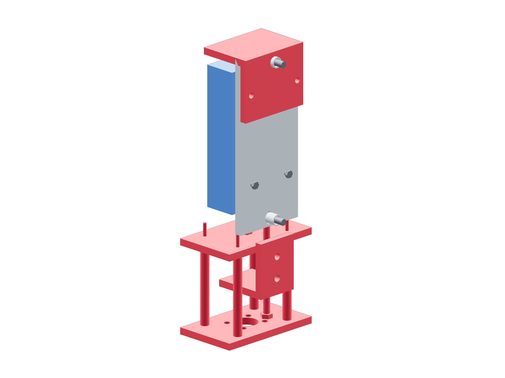

Guide the gauge for push and pull
Compression moves the gauge body toward the bridge with the manual quill. Tension moves the freely guided body away with the M6 jack; both paths pass through the load cell.

- Use the dedicated four proof M4 rear screws, four 7 mm tubes and two 12 OD washers per screw on the 70 × 160 slotted backing. Measure its 15.35 mm external grip, ≥4 mm engagement and no bottoming in the actual gauge sockets.
- Install the cap and existing manual jack. The two 9.825 mm metal guide tubes / M6 × 25 joints retain the backing laterally while its slots slide freely; keep the column braces tight.
- Fit M6 × 16 through the closed bridge with one 1 mm washer. Hand-fit the steel M6 × 1 coupling to this captured bolt and the gauge shaft; mark ≥6 mm engagement each end without bottoming or thread-end contact. Keep this connection for both signs.
- Keep the case, backing, cap and jack clear of hub, shaft, keeper and catch. Record force sign, zero/check and total uncertainty before either load.
The received threads fit freely, both force paths are coaxial, the gauge body feeds smoothly and the chuck has ≥10 mm downward travel above the metal cap. A forced thread, short engagement, loaded case, stuck guide or insecure press/column position fails the fixture. Unload onto the independent support and correct it; keep the braces tight.
The CAD column-base datum is a fixture reference. With the press unplugged and quill near mid-stroke, anchor the column below the press work-surface datum as needed using the matched brackets / kit joints. Place the cap under the chuck with ≥10 mm downward travel. Positively anchor press, fixture support and independent catch; no loose blocks or hand support.